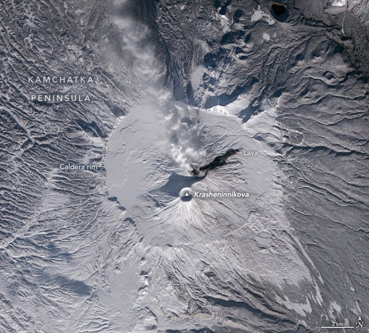

Krasheninnikova Remains Restless
The Krasheninnikova volcano on Russia’s Kamchatka Peninsula recently reawakened after more than 400 years of quiescence. The volcano began spilling lava and sending up plumes of ash on the morning of August 3, 2025, according to reports from the Kamchatkan Volcanic Eruption Response Team (KVERT), and has continued erupting ash, volcanic gases, and lava for several months.
On November 14, 2025, the OLI-2 (Operational Land Imager-2) on Landsat 9 captured this image of ongoing activity. A volcanic plume billows from one of Krasheninnikova’s craters and drifts to the northwest. The eruption has lofted plumes several kilometers above the crater rim, keeping the aviation color code at orange. A recent lava flow extends to the northeast, contrasting with the snowy slopes.
Krasheninnikova consists of two overlapping stratovolcanoes within a caldera roughly 10 kilometers (6 miles) in diameter. Scientists have dated the caldera-forming eruption to about 30,000 years ago. The volcano’s most recent previous eruption occurred around 1550, producing lava flows from both summit cones.
A wider view of the Kamchatka Peninsula shows Krasheninnikova near the center. Another volcano to the northeast casts a stark shadow, while the triangle-shaped Lake Kronotskoye appears near the top of the image. Snow covers much of the land, with the dark Pacific Ocean filling the bottom-right corner.
Krasheninnikova’s current episode began five days after an 8.8 magnitude earthquake shook the peninsula. The epicenter, one of the strongest recorded by modern instruments, was about 240 kilometers (150 miles) south of the volcano. In some cases, large earthquakes can trigger eruptions if a volcano is already primed with pressurized magma.
Scientists at NASA’s Jet Propulsion Laboratory (JPL) used a remote sensing technique called interferometric synthetic aperture radar (InSAR) to measure ground shifts in southern Kamchatka after the quake. Paul Lundgren, a JPL geophysicist, noted that InSAR detected surface deformation at Krasheninnikova before the eruption, likely indicating a dike of magma approaching the surface. “In keeping with a volcano that had not erupted in about 400 years,” he said, “I would consider this eruption as triggered by the magnitude 8.8 earthquake.”
Multiple Kamchatka volcanoes can erupt simultaneously. One of Krasheninnikova’s closest neighbors, Kronotskaya Sopka (Kronotsky), erupted briefly on October 4, 2025, its first activity in 102 years. The explosive event sent an ash plume 9 kilometers above sea level. Larger eruptions in the late Pleistocene and early Holocene produced lava flows that dammed a river and formed Lake Kronotskoye, the peninsula’s largest lake.